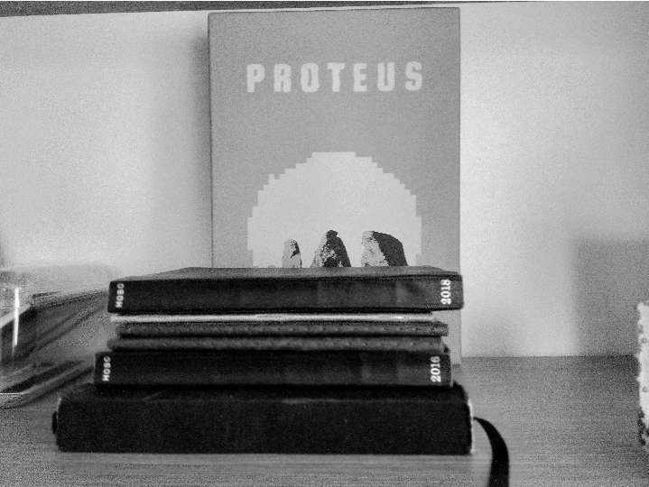

Logs
I’m not writing it down to remember it later, I’m writing it down to remember it now
~ Field Notes slogan
A selection of various things i keep track of.
Receiving a yearly calendar as a gift in 2015 was one of the biggest changes in my adult life. Since then, i've experimented with many journaling projects for media consumption, work hours and even alcohol intake.
It's very easy to overestimate your memory and recollection skills!
